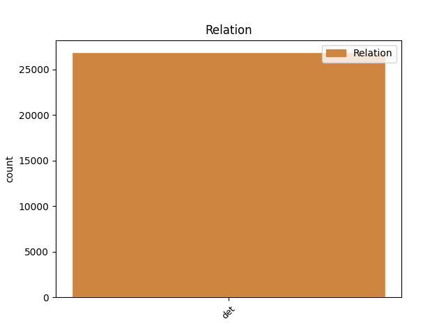
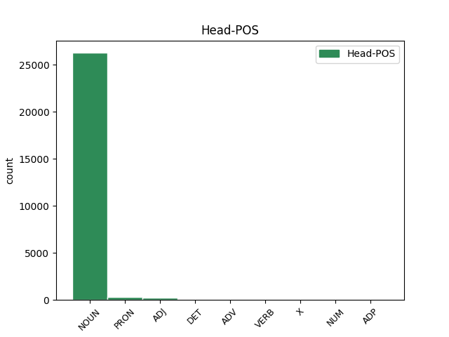
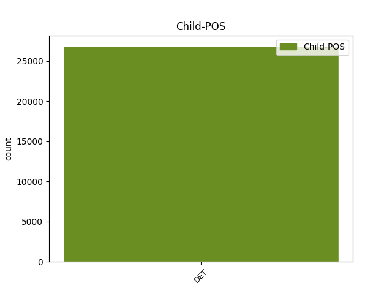

Distribution of features within this leaf



Agreement Rules sorted by frequency.
- When the dependent token is the determiner(det) of the head token,
1 sono _ _ _ _ 0 _ _ _
2 promotori _ _ _ _ 0 _ _ _
3 di _ _ _ _ 0 _ _ _
4 l' il DET RD Definite=Def|Gender=Fem|Number=Sing|PronType=Art 5 det _ _
5 iniziativa iniziativa NOUN S Gender=Fem|Number=Sing 0 _ _ _
6 Patrizia _ _ _ _ 0 _ _ _
7 Cavalli _ _ _ _ 0 _ _ _
8 , _ _ _ _ 0 _ _ _
9 Carlo _ _ _ _ 0 _ _ _
10 Cecchi _ _ _ _ 0 _ _ _
11 , _ _ _ _ 0 _ _ _
12 Alfonso _ _ _ _ 0 _ _ _
13 Berardinelli _ _ _ _ 0 _ _ _
14 , _ _ _ _ 0 _ _ _
15 Cesare _ _ _ _ 0 _ _ _
16 Garboli _ _ _ _ 0 _ _ _
17 , _ _ _ _ 0 _ _ _
18 Piergiorgio _ _ _ _ 0 _ _ _
19 Bellocchio _ _ _ _ 0 _ _ _
20 , _ _ _ _ 0 _ _ _
21 Gianfranco _ _ _ _ 0 _ _ _
22 Bettin _ _ _ _ 0 _ _ _
23 , _ _ _ _ 0 _ _ _
24 Grazia _ _ _ _ 0 _ _ _
25 Cherchi _ _ _ _ 0 _ _ _
26 , _ _ _ _ 0 _ _ _
27 Giorgio _ _ _ _ 0 _ _ _
28 Agamben _ _ _ _ 0 _ _ _
29 , _ _ _ _ 0 _ _ _
30 Goffredo _ _ _ _ 0 _ _ _
31 Fofi _ _ _ _ 0 _ _ _
32 e _ _ _ _ 0 _ _ _
33 Fabrizia _ _ _ _ 0 _ _ _
34 Ramondino _ _ _ _ 0 _ _ _
35 . _ _ _ _ 0 _ _ _
Disagree Examples:
1 In _ _ _ _ 0 _ _ _
2 gli _ _ _ _ 0 _ _ _
3 ultimi _ _ _ _ 0 _ _ _
4 anni _ _ _ _ 0 _ _ _
5 la _ _ _ _ 0 _ _ _
6 dinamica _ _ _ _ 0 _ _ _
7 di _ _ _ _ 0 _ _ _
8 i il DET RD Definite=Def|Gender=Masc|Number=Plur|PronType=Art 9 det _ _
9 polo polo NOUN S Gender=Masc|Number=Sing 0 _ _ _
10 di _ _ _ _ 0 _ _ _
11 attrazione _ _ _ _ 0 _ _ _
12 è _ _ _ _ 0 _ _ _
13 stata _ _ _ _ 0 _ _ _
14 sempre _ _ _ _ 0 _ _ _
15 più _ _ _ _ 0 _ _ _
16 caratterizzata _ _ _ _ 0 _ _ _
17 da _ _ _ _ 0 _ _ _
18 l' _ _ _ _ 0 _ _ _
19 emergere _ _ _ _ 0 _ _ _
20 di _ _ _ _ 0 _ _ _
21 una _ _ _ _ 0 _ _ _
22 crescente _ _ _ _ 0 _ _ _
23 concorrenza _ _ _ _ 0 _ _ _
24 che _ _ _ _ 0 _ _ _
25 si _ _ _ _ 0 _ _ _
26 è _ _ _ _ 0 _ _ _
27 progressivamente _ _ _ _ 0 _ _ _
28 spostata _ _ _ _ 0 _ _ _
29 da _ _ _ _ 0 _ _ _
30 le _ _ _ _ 0 _ _ _
31 singole _ _ _ _ 0 _ _ _
32 imprese _ _ _ _ 0 _ _ _
33 a _ _ _ _ 0 _ _ _
34 i _ _ _ _ 0 _ _ _
35 sistemi _ _ _ _ 0 _ _ _
36 economici _ _ _ _ 0 _ _ _
37 e _ _ _ _ 0 _ _ _
38 territoriali _ _ _ _ 0 _ _ _
39 , _ _ _ _ 0 _ _ _
40 determinando _ _ _ _ 0 _ _ _
41 l' _ _ _ _ 0 _ _ _
42 esigenza _ _ _ _ 0 _ _ _
43 di _ _ _ _ 0 _ _ _
44 una _ _ _ _ 0 _ _ _
45 riconsiderazione _ _ _ _ 0 _ _ _
46 di _ _ _ _ 0 _ _ _
47 i _ _ _ _ 0 _ _ _
48 rapporti _ _ _ _ 0 _ _ _
49 esistenti _ _ _ _ 0 _ _ _
50 tra _ _ _ _ 0 _ _ _
51 soggetti _ _ _ _ 0 _ _ _
52 produttivi _ _ _ _ 0 _ _ _
53 e _ _ _ _ 0 _ _ _
54 ambiente _ _ _ _ 0 _ _ _
55 in _ _ _ _ 0 _ _ _
56 cui _ _ _ _ 0 _ _ _
57 questi _ _ _ _ 0 _ _ _
58 operano _ _ _ _ 0 _ _ _
59 . _ _ _ _ 0 _ _ _
1 L' _ _ _ _ 0 _ _ _
2 offerta _ _ _ _ 0 _ _ _
3 italotedesca _ _ _ _ 0 _ _ _
4 è _ _ _ _ 0 _ _ _
5 stata _ _ _ _ 0 _ _ _
6 individuata _ _ _ _ 0 _ _ _
7 da _ _ _ _ 0 _ _ _
8 l' _ _ _ _ 0 _ _ _
9 Iri _ _ _ _ 0 _ _ _
10 come _ _ _ _ 0 _ _ _
11 la il DET RD Definite=Def|Gender=Fem|Number=Sing|PronType=Art 12 det _ _
12 migliore migliore ADJ A Degree=Cmp|Gender=Fem|Number=Plur 0 _ _ _
13 in _ _ _ _ 0 _ _ _
14 la _ _ _ _ 0 _ _ _
15 corsa _ _ _ _ 0 _ _ _
16 a _ _ _ _ 0 _ _ _
17 l' _ _ _ _ 0 _ _ _
18 Ast _ _ _ _ 0 _ _ _
19 , _ _ _ _ 0 _ _ _
20 produttrice _ _ _ _ 0 _ _ _
21 di _ _ _ _ 0 _ _ _
22 acciai _ _ _ _ 0 _ _ _
23 piani _ _ _ _ 0 _ _ _
24 inossidabili _ _ _ _ 0 _ _ _
25 e _ _ _ _ 0 _ _ _
26 speciali _ _ _ _ 0 _ _ _
27 con _ _ _ _ 0 _ _ _
28 impianti _ _ _ _ 0 _ _ _
29 a _ _ _ _ 0 _ _ _
30 Terni _ _ _ _ 0 _ _ _
31 e _ _ _ _ 0 _ _ _
32 Torino _ _ _ _ 0 _ _ _
33 , _ _ _ _ 0 _ _ _
34 1.300 _ _ _ _ 0 _ _ _
35 miliardi _ _ _ _ 0 _ _ _
36 di _ _ _ _ 0 _ _ _
37 fatturato _ _ _ _ 0 _ _ _
38 consolidato _ _ _ _ 0 _ _ _
39 e _ _ _ _ 0 _ _ _
40 4 _ _ _ _ 0 _ _ _
41 mila _ _ _ _ 0 _ _ _
42 addetti _ _ _ _ 0 _ _ _
43 . _ _ _ _ 0 _ _ _
1 Ma _ _ _ _ 0 _ _ _
2 intanto _ _ _ _ 0 _ _ _
3 sta _ _ _ _ 0 _ _ _
4 pensando _ _ _ _ 0 _ _ _
5 a _ _ _ _ 0 _ _ _
6 qualche _ _ _ _ 0 _ _ _
7 correttivo _ _ _ _ 0 _ _ _
8 per _ _ _ _ 0 _ _ _
9 i il DET RD Definite=Def|Gender=Masc|Number=Plur|PronType=Art 11 det _ _
10 " _ _ _ _ 0 _ _ _
11 manager manager NOUN S Number=Sing 0 _ _ _
12 " _ _ _ _ 0 _ _ _
13 ? _ _ _ _ 0 _ _ _
14 l' _ _ _ _ 0 _ _ _
15 impressione _ _ _ _ 0 _ _ _
16 è _ _ _ _ 0 _ _ _
17 che _ _ _ _ 0 _ _ _
18 la _ _ _ _ 0 _ _ _
19 legge _ _ _ _ 0 _ _ _
20 nazionale _ _ _ _ 0 _ _ _
21 sia _ _ _ _ 0 _ _ _
22 povera _ _ _ _ 0 _ _ _
23 di _ _ _ _ 0 _ _ _
24 indicazioni _ _ _ _ 0 _ _ _
25 e _ _ _ _ 0 _ _ _
26 che _ _ _ _ 0 _ _ _
27 i _ _ _ _ 0 _ _ _
28 criteri _ _ _ _ 0 _ _ _
29 di _ _ _ _ 0 _ _ _
30 selezione _ _ _ _ 0 _ _ _
31 andrebbero _ _ _ _ 0 _ _ _
32 allargati _ _ _ _ 0 _ _ _
33 : _ _ _ _ 0 _ _ _
34 in _ _ _ _ 0 _ _ _
35 l' _ _ _ _ 0 _ _ _
36 elenco _ _ _ _ 0 _ _ _
37 sono _ _ _ _ 0 _ _ _
38 pochi _ _ _ _ 0 _ _ _
39 i _ _ _ _ 0 _ _ _
40 candidati _ _ _ _ 0 _ _ _
41 che _ _ _ _ 0 _ _ _
42 provengono _ _ _ _ 0 _ _ _
43 da _ _ _ _ 0 _ _ _
44 il _ _ _ _ 0 _ _ _
45 settore _ _ _ _ 0 _ _ _
46 privato _ _ _ _ 0 _ _ _
47 . _ _ _ _ 0 _ _ _
1 Quanto _ _ _ _ 0 _ _ _
2 a _ _ _ _ 0 _ _ _
3 l' _ _ _ _ 0 _ _ _
4 erogazione _ _ _ _ 0 _ _ _
5 di _ _ _ _ 0 _ _ _
6 il _ _ _ _ 0 _ _ _
7 servizio _ _ _ _ 0 _ _ _
8 , _ _ _ _ 0 _ _ _
9 si _ _ _ _ 0 _ _ _
10 prospetta _ _ _ _ 0 _ _ _
11 una _ _ _ _ 0 _ _ _
12 < _ _ _ _ 0 _ _ _
13 convergente _ _ _ _ 0 _ _ _
14 azione _ _ _ _ 0 _ _ _
15 > _ _ _ _ 0 _ _ _
16 tra _ _ _ _ 0 _ _ _
17 gli _ _ _ _ 0 _ _ _
18 erogatori _ _ _ _ 0 _ _ _
19 , _ _ _ _ 0 _ _ _
20 sia _ _ _ _ 0 _ _ _
21 pubblici _ _ _ _ 0 _ _ _
22 sia _ _ _ _ 0 _ _ _
23 privati _ _ _ _ 0 _ _ _
24 , _ _ _ _ 0 _ _ _
25 in _ _ _ _ 0 _ _ _
26 modo _ _ _ _ 0 _ _ _
27 tale _ _ _ _ 0 _ _ _
28 che _ _ _ _ 0 _ _ _
29 < _ _ _ _ 0 _ _ _
30 cooperino _ _ _ _ 0 _ _ _
31 tra _ _ _ _ 0 _ _ _
32 loro _ _ _ _ 0 _ _ _
33 per _ _ _ _ 0 _ _ _
34 servire _ _ _ _ 0 _ _ _
35 a _ _ _ _ 0 _ _ _
36 il _ _ _ _ 0 _ _ _
37 meglio _ _ _ _ 0 _ _ _
38 i il DET RD Definite=Def|Gender=Masc|Number=Plur|PronType=Art 39 det _ _
39 pazienti paziente NOUN S Number=Sing 0 _ _ _
40 clienti _ _ _ _ 0 _ _ _
41 titolari _ _ _ _ 0 _ _ _
42 di _ _ _ _ 0 _ _ _
43 risorse _ _ _ _ 0 _ _ _
44 pubbliche _ _ _ _ 0 _ _ _
45 o _ _ _ _ 0 _ _ _
46 private _ _ _ _ 0 _ _ _
47 , _ _ _ _ 0 _ _ _
48 queste _ _ _ _ 0 _ _ _
49 ultime _ _ _ _ 0 _ _ _
50 provenienti _ _ _ _ 0 _ _ _
51 anche _ _ _ _ 0 _ _ _
52 da _ _ _ _ 0 _ _ _
53 assicurazioni _ _ _ _ 0 _ _ _
54 liberamente _ _ _ _ 0 _ _ _
55 sottoscritte _ _ _ _ 0 _ _ _
56 > _ _ _ _ 0 _ _ _
57 . _ _ _ _ 0 _ _ _
1 E _ _ _ _ 0 _ _ _
2 ci _ _ _ _ 0 _ _ _
3 saranno _ _ _ _ 0 _ _ _
4 anche _ _ _ _ 0 _ _ _
5 i _ _ _ _ 0 _ _ _
6 vecchi _ _ _ _ 0 _ _ _
7 vertici _ _ _ _ 0 _ _ _
8 e _ _ _ _ 0 _ _ _
9 gli il DET RD Definite=Def|Gender=Masc|Number=Plur|PronType=Art 11 det _ _
10 ex _ _ _ _ 0 _ _ _
11 manager manager NOUN S Number=Sing 0 _ _ _
12 di _ _ _ _ 0 _ _ _
13 la _ _ _ _ 0 _ _ _
14 Ferruzzi _ _ _ _ 0 _ _ _
15 : _ _ _ _ 0 _ _ _
16 l' _ _ _ _ 0 _ _ _
17 ex _ _ _ _ 0 _ _ _
18 amministratore _ _ _ _ 0 _ _ _
19 delegato _ _ _ _ 0 _ _ _
20 di _ _ _ _ 0 _ _ _
21 la _ _ _ _ 0 _ _ _
22 Montedison _ _ _ _ 0 _ _ _
23 Carlo _ _ _ _ 0 _ _ _
24 Sama _ _ _ _ 0 _ _ _
25 , _ _ _ _ 0 _ _ _
26 l' _ _ _ _ 0 _ _ _
27 ex _ _ _ _ 0 _ _ _
28 presidente _ _ _ _ 0 _ _ _
29 Giuseppe _ _ _ _ 0 _ _ _
30 Garofano _ _ _ _ 0 _ _ _
31 , _ _ _ _ 0 _ _ _
32 Luigi _ _ _ _ 0 _ _ _
33 Bisignani _ _ _ _ 0 _ _ _
34 , _ _ _ _ 0 _ _ _
35 Marcello _ _ _ _ 0 _ _ _
36 Portesi _ _ _ _ 0 _ _ _
37 , _ _ _ _ 0 _ _ _
38 Emilio _ _ _ _ 0 _ _ _
39 Binda _ _ _ _ 0 _ _ _
40 , _ _ _ _ 0 _ _ _
41 Romano _ _ _ _ 0 _ _ _
42 Venturi _ _ _ _ 0 _ _ _
43 . _ _ _ _ 0 _ _ _